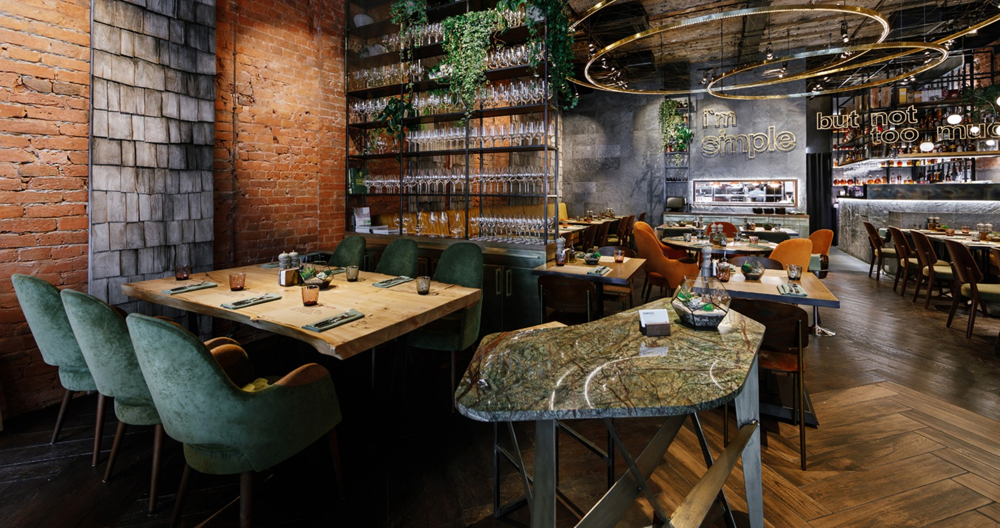
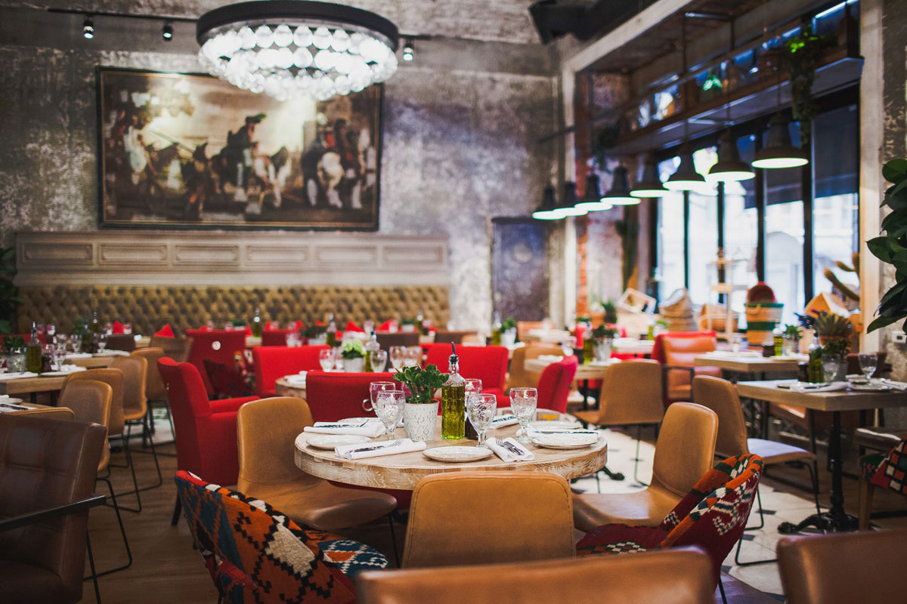

Главная
Меню
Галерея
Контакты
Рестораны

О нас
Ресторан традиционной грузинской кухни. Здесь вас ждут: открытая кухня, блюда на гриле, и многое другое!
Мы убрали всё лишнее. Мы сделали четкий фокус на приготовлении самых популярных блюд и напитков.
Стильная атмосфера ресторана располагает к уютному и комфортному отдыху, а лучшие блюда от шеф-повара сделают ваш вечер поистине отличным

Наши сильные стороны
Грузинская кухня - традиционная кухня Грузии, распространённая и популярная во всём мире
Знали ли вы, что грузинцы отменно готовят...нет? Ну вот теперь знаете